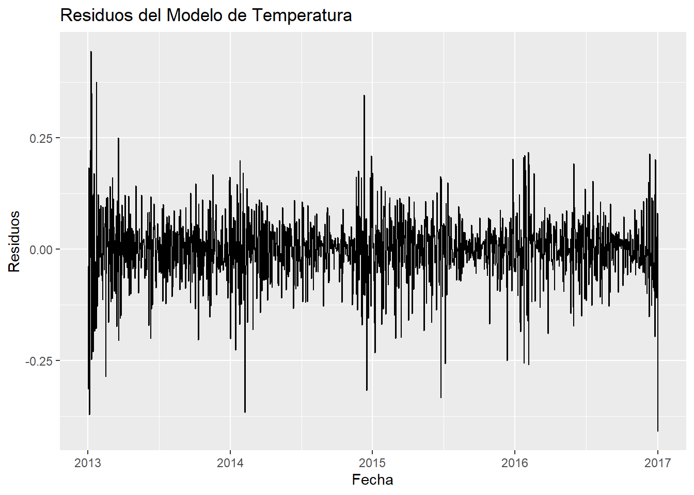
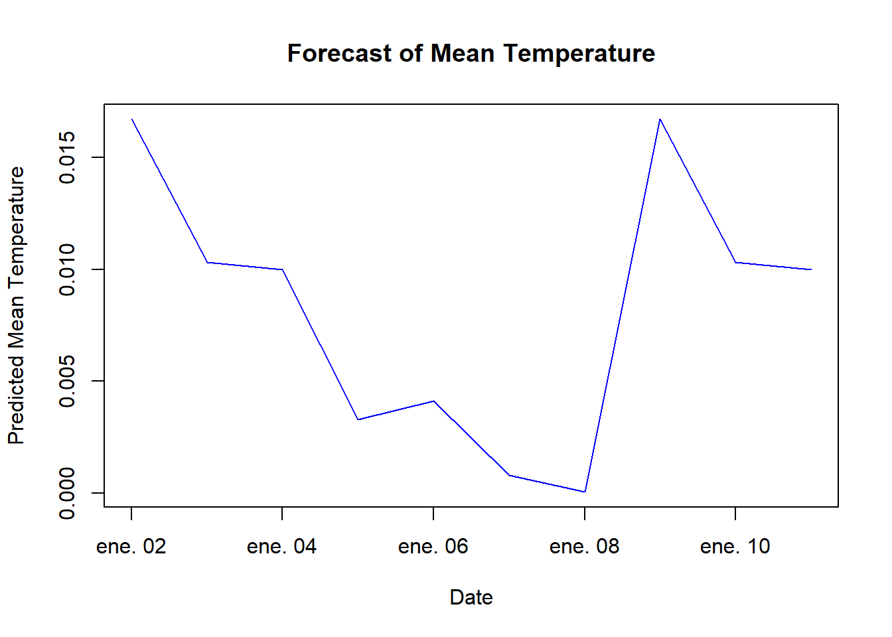

Chapter 6 Modulo 2 - Unidad 1
- Inclusión de Variables en el Tiempo
library(lubridate) # para manejo de fechas
# Convertir la columna de fecha a tipo Date si no está convertida
data$date <- as.Date(data$date)
# Crear nuevas variables de tiempo
data$year <- year(data$date)
data$month <- month(data$date)
data$day <- day(data$date)
data$day_of_week <- wday(data$date, label = TRUE) # Días de la semana con etiquetas6.1 Modelos de Series de Tiempo: Definiciones y Aplicaciones
Modelo Autorregresivo (AR): Un modelo AR utiliza dependencias entre observaciones sucesivas para predecir valores futuros basándose únicamente en los valores pasados. Se denota como AR(p), donde ‘p’ es el número de observaciones pasadas (lags) utilizadas como predictores.
Modelo de Media Móvil (MA): En un modelo MA, la predicción se realiza sobre la base de los errores de predicción pasados, no directamente sobre los valores. Se expresa como MA(q), donde ‘q’ es el número de errores pasados que el modelo toma en cuenta.
Modelo ARIMA (AutoRegressive Integrated Moving Average): Combinando AR y MA, este modelo también incorpora un término de diferenciación (d) para convertir la serie en estacionaria, esencial para cumplir con los supuestos de los modelos lineales de series de tiempo. Se denota como ARIMA(p, d, q).
Modelo ARIMA Estacional: Extiende el ARIMA para capturar estacionalidades. Se denota como ARIMA(p, d, q)(P, D, Q)[s], donde P, D, y Q representan la autoregresión estacional, la diferenciación estacional, y la media móvil estacional, respectivamente, con ‘s’ indicando la periodicidad de la temporada.
Ajuste de Modelos de Series de Tiempo en R
# Cargar las librerías necesarias
library(tseries)
library(forecast)
library(ggplot2)
library(lubridate)
# Cargar el dataset
ruta <- "C:/Users/Diego Ortiz/OneDrive/Documentos/Series de tiempo/Series1/ST1/DailyDelhiClimateTrain.csv"
data <- read.csv(ruta)
# Ajuste del formato de la fecha
data$date <- as.Date(data$date)
data$day_of_week <- wday(data$date, label = TRUE)
# Análisis de Estacionariedad y Transformaciones
# Verificación inicial de estacionariedad
adf_result_original <- adf.test(data$meantemp, alternative = "stationary")
print(adf_result_original)##
## Augmented Dickey-Fuller Test
##
## data: data$meantemp
## Dickey-Fuller = -1.8526, Lag order = 11, p-value = 0.6407
## alternative hypothesis: stationary# Transformación logarítmica
data$meantemp_log <- log(data$meantemp)
# Diferenciación de la serie transformada
data$meantemp_diff <- c(NA, diff(data$meantemp_log)) # Agrega NA al inicio para mantener la longitud
# Reevaluar estacionariedad con la serie diferenciada
adf_result_diff <- adf.test(na.omit(data$meantemp_diff), alternative = "stationary")## Warning in adf.test(na.omit(data$meantemp_diff), alternative = "stationary"):
## p-value smaller than printed p-value##
## Augmented Dickey-Fuller Test
##
## data: na.omit(data$meantemp_diff)
## Dickey-Fuller = -13.915, Lag order = 11, p-value = 0.01
## alternative hypothesis: stationary# Remover NA creado por la diferenciación
data <- na.omit(data)
# Ajuste de un Modelo Lineal Estacionario
# Modelo lineal utilizando variables temporales y la serie transformada y diferenciada
model <- lm(meantemp_diff ~ year(date) + month(date) + day_of_week, data = data)
# Revisar el resumen del modelo para ver la significancia de los predictores
summary(model)##
## Call:
## lm(formula = meantemp_diff ~ year(date) + month(date) + day_of_week,
## data = data)
##
## Residuals:
## Min 1Q Median 3Q Max
## -0.40903 -0.03496 0.00410 0.03966 0.44474
##
## Coefficients:
## Estimate Std. Error t value Pr(>|t|)
## (Intercept) 1.5627646 3.5452077 0.441 0.65942
## year(date) -0.0007708 0.0017598 -0.438 0.66144
## month(date) -0.0015183 0.0005713 -2.658 0.00796 **
## day_of_week.L -0.0056606 0.0052113 -1.086 0.27757
## day_of_week.Q -0.0083401 0.0052105 -1.601 0.10968
## day_of_week.C 0.0083180 0.0052134 1.595 0.11082
## day_of_week^4 -0.0055981 0.0052131 -1.074 0.28307
## day_of_week^5 0.0017441 0.0052152 0.334 0.73811
## day_of_week^6 -0.0039548 0.0052126 -0.759 0.44816
## ---
## Signif. codes: 0 '***' 0.001 '**' 0.01 '*' 0.05 '.' 0.1 ' ' 1
##
## Residual standard error: 0.07531 on 1452 degrees of freedom
## Multiple R-squared: 0.0104, Adjusted R-squared: 0.004946
## F-statistic: 1.907 on 8 and 1452 DF, p-value: 0.05521# Diagnóstico del Modelo
# Verificar los residuos del modelo
# Gráfico de residuos
ggplot(data, aes(x = date, y = residuals(model))) +
geom_line() +
labs(title = "Residuos del Modelo de Temperatura", y = "Residuos", x = "Fecha")
# Prueba de normalidad de los residuos
shapiro_test_result <- shapiro.test(residuals(model))
print(shapiro_test_result)##
## Shapiro-Wilk normality test
##
## data: residuals(model)
## W = 0.94823, p-value < 2.2e-16# Previsión Futura
# Generar un nuevo conjunto de datos para las predicciones futuras
future_dates <- seq(max(data$date) + 1, by = "day", length.out = 10)
new_data <- data.frame(
date = future_dates,
day_of_week = factor(wday(future_dates, label = TRUE)),
meantemp_diff = NA, # Placeholder, no se usa en el modelo de predicción
year = year(future_dates),
month = month(future_dates)
)
# Predecir usando el modelo ajustado
prediction <- predict(model, newdata = new_data)
# Visualizar las predicciones
plot(future_dates, prediction, type = "l", col = "blue", xlab = "Date", ylab = "Predicted Mean Temperature",
main = "Forecast of Mean Temperature")
lines(data$date, data$meantemp, col = "red") # Añadir los datos originales para comparar